1. 当一个较小的量能量尽一个较大的量时，我们把较小量叫做较大量的一部分．
2. 当一个较大的量能被较小的量量尽时，我们把较大的量叫做较小量的倍量．
3. 比是两个同类量彼此之间的一种大小关系．
4. 把两个量中任一个量几倍以后能大于另外一个量时，则说这两个量彼此之间有一个比．
5. 有四个量，第一量比第二量与第三量比第四量叫做有相同比，如果对第一与第三个量取任何同倍数，又对第二与第四个量取任何同倍数，而第一与第二倍量之间依次有大于、等于或小于的关系，那么第三与第四倍量之间便有相应的关系[1]．
6. 有相同比的四个量叫做成比例的量．
7. 在四个量之间，第一、第三两个量取相同的倍数，又第二、第四两个量取另一相同的倍数，若第一个的倍量大于第二个的倍量，但是第三个的倍量不大于第四个的倍量时，则称第一量与第二量的比大于第三量与第四量的比[2]．
8. 一个比例至少要有三项[3]．
9. 当三个量成比例时，则称第一量与第三量的比是第一量与第二量的二次比[4]．
10. 当四个量成〈连〉比例时，则称第一量与第四量的比为第一量与第二量的三次比．不论有几个量成连比都依此类推[5]．
11. 在成比例的四个量中，将前项与前项且后项与后项叫做对应量．
12. 更比是前项比前项且后项比后项[6]．
13. 反比是后项作前项，前项作后项[7]．
14. 合比是前项与后项的和比后项[8]．
15. 分比是前项与后项的差比后项[9]．
16. 换比是前项比前项与后项的差[10]．
17. 首末比指的是，有一些量又有一些与它们个数相等的量，若在各组每取二量作成相同的比例，则第一组量中首量比末量如同第二组中首量比末量[11]．
或者，换言之，这意思是取掉中间项，保留两头的项．
18. 波动比是这样的，有三个量，又有另外与它们个数相等的三个量，在第一组量里的前项比中项如同第二组量里的中项比后项，同时，第一组量里的中项比后项如同第二组量里的前项比中项[12].
命题1 如果有任意多个量，分别是同样多个量的同倍量．则无论这个倍数是多少，前者的和也是后者的和的同倍量．
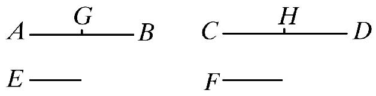
设量AB，CD分别是个数与它们相等的量E，F的同倍量．
则可证无论AB是E的多少倍，则AB，CD的和也是E，F的和的同样的多少倍．
因为，AB是E的倍量，CD是F的倍量，其倍数相等，则在AB中有多少个等于E的量，也在CD中有同样多少个等于F的量．
设AB被分成等于E的量AG、GB，并且CD被分成等于F的量CH、HD.那么，量AG、GB的个数等于量CH、HD的个数．
现在，因为AG等于E，CH等于F，故AG等于E并且AG、CH的和等于E、F的和．
同理，GB等于E，且GB、HD的和等于E、F的和．故在AB中有多少个等于E的量，于是在AB、CD的和中也有同样多少个量等于E、F的和．
所以，不论AB是E的多少倍，AB、CD的和也是E、F的和的同样多少倍．
证完
德·摩根关于卷ⅴ.1-6评论道，它们是“一些简单具体的算术命题，但由于使用语言陈述，使现代人不易理解”．正如这样的语句，十英亩与十路德等于一英亩与一路德的十倍．因此，关于这些命题以及卷V中其他命题的注记的目的之一就是使用简短和熟悉的现代（代数）符号来表达相同的事实，以便读者理解．为此，我们将用字母表中前面的字母a，b，c等表示量，使用小写字母而不用大写字母是为了避免与欧几里得的字母系统混淆，我们将使用小写字母m，n，p等来表示整数，于是，ma总意味着m乘以a或者a的m倍（1a是a的1倍，2a是a的2倍，等等）．
因而，命题1断言，如果ma，mb，mc等是a，b，c等的同倍数，则
ma+mb+mc+…=m（a+b+c+…）．
命题2 如果第一量是第二量的倍量，第三量是第四量的倍量，其倍数相等；又第五量是第二量的倍量，第六量是第四量的倍量，其倍数相等．则第一量与第五量的和是第二量的倍量，第三量与第六量的和是第四量的倍量，其倍数相等．
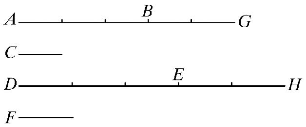
设第一量AB是第二量C的倍量，第三量DE是第四量F的倍量，其倍数相等；又第五量BG是第二量C的倍量，第六量EH是第四量F的倍量，其倍数相等．
则可证第一量与第五量的和AG是第二量C的倍量，第三量与第六量的和DH是第四量F的倍量，其倍数相等．
事实上，因为AB是C的倍量，DE是F的倍量，其倍数相等．故在AB中存在多少个等于C的量，则在DE中也存在同样多少个等于F的量．
同理，在BG中存在多少个等于C的量，则在EH中也存在同样多少个等于F的量．因此，在整体AG中存在多少个等于C的量，在整体DH中也存在同样多少个等于F的量．
故无论AG是C的几倍，DH也是F的几倍．
所以，第一与第五量的和AG是第二量C的倍量，第三量与第六量的和DH是第四量F的倍量，其倍数相等．
证完
为了找到与该命题的结论所对应的公式，设第一个量为ma，第二个量为a，第三个量为mb，第四个量为b，第五个量为na，第六个量为nb．则该命题断言，
ma+na=（m+n）a， 并且 mb+nb=（m+n）b.
更一般地，如果pa，qa，…以及pb，qb，…也是a，b的倍数，则
ma+na+pa+qa+…=（m+n+p+q+…）a，
mb+nb+pb+qb+…=（m+n+p+q+…）b，
这个推广叙述在v.2的西姆森（Simson）的推论中：
“由此显然可知，如果任意个量AB，BG，GH是另一个量C的倍数，并且同个数的量DE，EK，KL分别是F的相同倍数，则前面量的总和AH关于C的倍数与后面量的总和DL关于F的倍数相同．”
在证明时，把m和n分拆为单位，证明过程告诉我们，a的倍数是m+n，即两个倍数的和，可表示为
ma+na=（m+n）a，
更一般地
ma+na+pa+…=（m+n+p+…）a.
命题3 如果第一量是第二量的倍量，第三量是第四量的倍量，其倍数相等；如果再有同倍数的第一量及第三量．则同倍后的这两个量分别是第二量及第四量的倍量，并且这两个倍数是相等的．
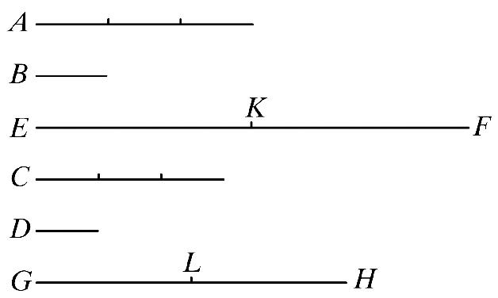
设第一量A是第二量B的倍量，第三量C是第四量D的倍量，其倍数相等．又取定A，C的等倍量EF，GH.
则可证EF是B的倍量，GH是D的倍量，其倍数相等．
事实上，因为EF是A的倍量，GH是C的倍量，其倍数相等，故在EF中存在多少个等于A的量，也在GH中存在同样多少个等于C的量．
设EF被分成等于A的量EK，KF；又GH被分成等于C的量GL，LH.
那么，量EK，KF的个数等于量GL，LH的个数．
又因为A是B的倍量，C是D的倍量，其倍数相等；这时EK等于A，且GL等于C，故EK是B的倍量，GL是D的倍量，其倍数相等．
同理，KF是B的倍量，LH是D的倍量，其倍数相等．
那么，第一量EK是第二量B的倍量，第三量GL是第四量D的倍量，其倍数相等．
又第五量KF是第二量B的倍量，第六量LH是第四量D的倍量，其倍数也相等．故第一量与第五量的和EF是第二量B的倍量，第三量与第六量的和GH是第四量D的倍量，其倍数相等． ［ⅴ.2］
证完
在公布这个命题时，海伯格（Heiberg）曾用到首末二字，实际上，它与首末比的定义（17）没有关系．但是，从下述可以看出，此处使用的表达方式与首末比定义中的表达方式是很类似的，这个命题断言，如果
na，nb，是a，b的同倍数，
并且如果 m·na，m·nb是na，nb的同倍数，
则 m·na关于a的倍数与m·nb关于b的倍数相同．显然，这个命题可以推广，我们可以证明
p·q…m·na关于a的倍数
与p·q…m·nb关于b的倍数相同，
其中两个表示式中的数列p·q…m·n是完全相同的；而首末二字表示这样的事实，在两个序列na，m·na，…和nb，m·nb…中，分别到a，b有相同距离的项有同倍数．
此处的证明再次把m，n分拆为单位，并且说明a的倍数m·na是数m，n的乘积，即（mn）倍，即
m·na=mn·a.
命题4 如果第一量比第二量与第三量比第四量有相同的比，取第一量与第三量的任意同倍量，又取第二量与第四量的任意同倍量．则按顺序它们仍有相同的比．
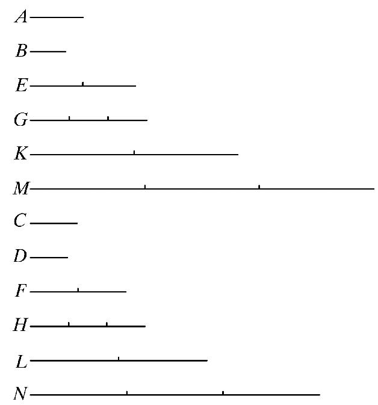
设第一量A比第二量B与第三量C比第四量D有相同的比．
取A、C的等倍量为E、F；又取B、D的等倍量为G、H.
则可证E比G如同F比H.
事实上，令E、F的同倍量为K、L；另外，G、H的同倍量为M、N.
因为，E是A的倍量，F是C的倍量，其倍数相同．又取定E、F的同倍量K、L.
故K是A的倍量，L是C的倍量，其倍数相同． ［v.3］
同理，M是B的倍量，N是D的倍量，其倍数相同．
又因为A比B如同C比D，且K、L是A、C的同倍量；
另外，M、N是B、D的同倍量，
因而，如果M大于K，N也大于L；
如果M等于K，N也等于L；
如果M小于K，N也小于L. ［v.定义5］
又，K、L是E、F的同倍量，
另外，M、N是G、H的同倍量，
故E比G如同F比H. ［v.定义5］
证完
这个命题证明了，如果a，b，c，d成比例，则
ma：nb=mc：nd
证明如下：
取ma，mc的任意倍数pma，pmc，并且取nb，nd的任意倍数qnb，qnd．
因为 a：b=c：d，可推出［v.定义5］．
若 pma>=<qnb，则相应有pmc>=<qnd．
但是，p和q是任意的，因而［v.定义5］
ma：nb=mc：nd．
注意，欧几里得关于取A、C的任意同倍数以及B、D的任意同倍数的短语的原话是“取A，C的同倍数E，F以及B，D的同倍数G，H”，E，F称为
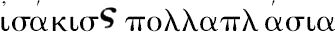
，而G，H称为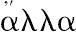
，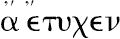
，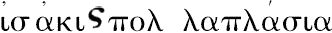
．并且类似地，取E，F的任意同倍数（K，L），以及G，H的任意同倍数（M，N）．但是，后来欧几里得使用了同样的短语于原来量的新的同倍数，譬如说“取A，C的同倍数K，L以及取B，D的同倍数M，N”；而M，N不是B，D的同倍数，它是（G，H）的同倍数，并且（G，H）是B，D的同倍数，尽管这些是随便取的．西姆森在第一个地方，在短语A，C的同倍数E，F以及E，F的同倍数K，L那里加上了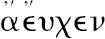
，由于这个词是“完全必要的（wholly necessary）”，并且，在第二个地方又取掉了它们，并且把M，N称为B，D的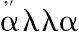
，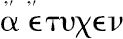
，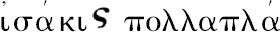
-σια，由于取B，D的同倍数M，N不是真的．西姆森又说：“奇怪的是布里格斯（Briggs）及格雷戈里（Gregory）都没有在命题4的第一个地方以及本卷命题17的第二个地方把它们取掉，布里格斯在本卷的命题13的一个地方取掉了这些词，格雷戈里在命题13的三个地方把它们变为词某个（Some），而在第四个地方取掉了它们．在希腊文本（Greek text）中没有一个地方取掉词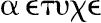
，他们这样做是对的．同一个词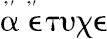
出现在本卷命题11的四个地方，在第一个和最后一个地方它们是必要的，而在第二个和第三个地方它们是多余的，尽管它们是真的；类似地，在本卷命题12，22，23的第二个地方它们是多余的；但是在卷XI的命题23，25的最后一个地方是必要的．”泰奥恩（Theon）关于这个命题说道：“因为已经证明了若K超过M，则L也超过N；若K等于M，则L也等于N，若K小于M，则L小于N，所以，显然，若M超过K，则N也超过L；若M等于K，则N也等于L；若M小于K，则N也小于L，因而
G：E=H：F.
推论：明显地，若四个量成比例，则其反比也成比例．”
西姆森正确地指出，泰奥恩想要证明若E，G，F，H成比例，则其反比也成比例，即G比E等于H比F，其证明并不依赖于命题4及它的证明；因为，当说到“若K超过M时，则L也超过N，等等”时，它不是由E，G，F，H成比例的事实来证明的（它是命题4的结论），而是从A，B，C，D成比例的事实证明的．
若A，B，C，D成比例，则其反比也成比例这个命题不是由欧几里得给出的，西姆森在他的命题B中给出了证明．实际上，从卷Ⅴ的第5个定义来看这是显然的，可能欧几里得认为它是不必要的，因而省略了它．
在泰奥恩的推论处，西姆森说：“类似地，如果第一个与第二个的比等于第三个与第四个的比，则第一个和第三个的任意同倍数对第二个和第四个的比相同；并且第一个和第三个对第二个和第四个的任意同倍数有相同的比．”
其证明当然可以从欧几里得的命题的方法推出，只有一点差别，代替两对同倍数，可以取这些量的本身．换句话说，结论
ma：nb=mc：nd
当m或n等于单位时也是真的．
正如德·摩根所说，西姆森的推论只对那些不承认M在序列M，2M，3M等中的人是必要的；例外只是语法的而不是别的．同样的话对西姆森的命题A也是有效的，“如果四个量的第一个比第二个等于第三个比第四个，那么若第一个大于第二个，则第三个大于第四个；若第一、第二相等，则第三、第四相等；若第一小于第二，则第三小于第四”．这个对那些相信一个A也在倍数之列的人来说是不必要的，尽管倍数（multus）意味着多个（many）．
命题5 如果一个量是另一个量的倍量，而且第一个量减去的部分是第二个量减去的部分的倍量，其倍数相等．则剩余部分是剩余部分的倍量，其倍数与整体之间的倍数相等．
设量AB是量CD的倍量，部分AE是部分CF的倍量，其倍数相等．
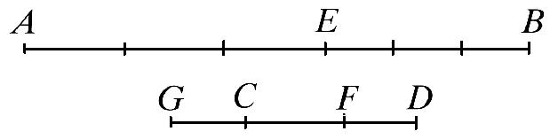
则可证剩余量EB是剩余量FD的倍量，其倍数与整体AB与整体CD的倍数相等．
无论AE是CF的多少倍，可设EB也是CG的同样倍数．
因为AE是CF的倍量，EB是GC的倍量，其倍数相等．故AE是CF的倍量，AB是GF的倍量，其倍数相等． ［v.1］
但是，由假设，AE是CF的倍量，AB是CD的倍量，其倍数相等．
所以，AB是量GF，CD的每一个的倍量，其倍数相等．
从而，GF等于CD.
设由以上每个减去CF，故余量GC等于余量FD.
又因为AE是CF的倍量，EB是GC的倍量，其倍数相等．且GC等于DF.
故，AE是CF的倍量，EB是FD的倍量，其倍数相等．
但是，由假设，AE是CF的倍量，AB是CD的倍量，其倍数相等．
即余量EB是余量FD的倍量，其倍数与整体AB对整体CD的倍数相等．
证完
这个命题对应于命题v.1，只是把加号换成了减号，该命题证明了公式
ma-mb=m（a-b）.
欧几里得的作图假定了若AE是CF的任意倍数，并且EB是任意另一个量，则可找到第四个线段，使得EB是它的倍数，其倍数是AE关于CF的倍数，换句话说，任给一个量，我们可以把它分为任意个相等部分．然而，在此并未证明．直到在命题vi.9中，佩尔塔里乌斯（Peletarius）看出了其作图的这个缺点．把它看成一个假设的作图，并未克服其困难，作为假设的作图也不是欧几里得的风格．在佩尔塔里乌斯及坎帕努斯（Campanus）的阿拉伯文翻译之后，由西姆森给出了另外一个作图加以纠正，只需要把一个量加到它本身若干次，其证明严格遵循欧几里得的风格．
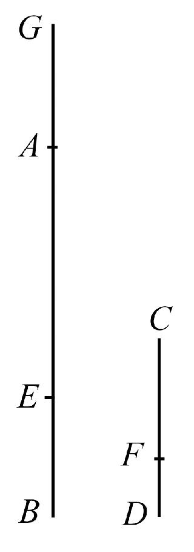
“取FD的倍数AG，其倍数是AE关于CF的倍数；因而，AE关于CF与EG关于CD的倍数相同．但是，由假设AE关于CF的倍数与AB关于CD的倍数相同；因而，EG关于CD的倍数与AB关于CD的倍数相同；因此
EG=AB.
取掉它们的公共部分AE，则剩余部分AG等于剩余部分EB．
因为AE关于CF的倍数等于AG关于FD的倍数，又因为AG等于EB，所以AE关于CF的倍数等于EB关于FD的倍数．
但是，AE关于CF的倍数等于AB关于CD的倍数，因而，EB关于FD的倍数等于AB关于CD的倍数．”证完．
欧几里得的证明等于下述证明．假设取一个量x，使得
ma-mb=mx，
两边加上mb，有（由命题v.1）
ma=m（x+b）
因而 a=x+b，或x=a-b，
于是 ma-mb=m（a-b）.
西姆森的证明如下：
取x=m（a-b），它关于（a-b）的倍数等于mb关于b的倍数．而后，给两边加上mb，有（由命题v.1）
x+mb=ma，
或 x=ma-mb，
即 ma-mb=m（a-b）.
命题6 如果两个量是另外两个量的同倍量，而且由前二量中减去后两个量的任何同倍量．则剩余的两个量或者与后两个量相等，或者是它们的同倍量．
设两个量AB、CD是两个量E、F的同倍量，由前二量减去E、F的同倍量AG、CH.
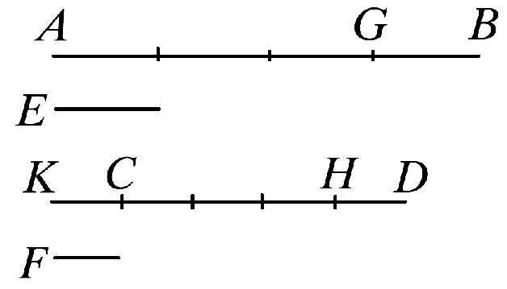
则可证余量GB、HD或者等于E、F，或者是它们的同倍量．
为此，首先可设GB等于E，则可证HD也等于F.
因为可作CK等于F.
因为AG是E的倍量，而CH是F的倍量，其倍数相等．这时，GB等于E且KC等于F，故AB是E的倍量，而KH是F的倍量，其倍数相等．
［v.2］
但是，由假设，AB是E的倍量，而CD是F的倍量，其倍数相等，
所以，KH是F的倍量，而CD是F的倍量，其倍数相等．
则量KH、CD的每一个都是F的同倍量．
故KH等于CD.
由上面每个量减去CH，
则余量KC等于余量HD.
但是，F等于KC，
故HD也等于F.
因此，如果GB等于E，HD也等于F.
类似地，我们可以证明，如果GB是E的倍量，则HD也是F的同倍量．
证完
这个命题对应于命题v.2，只是把加号换成了减号．该命题断言，若n小于m，则ma-na关于a的倍数等于mb-nb关于b的倍数．证明分为m-n等于1和大于1两种情形．
西姆森注意到，只有第一种情形（较简单的情形）早在古希腊已被证明，两种情形的证明叙述在从阿拉伯文翻译的拉丁文本中；西姆森提供了第二种情形的证明，而第二种情形的证明是欧几里得留给读者的．事实上，第二种情形的证明与第一种情形的证明完全一样，除了在作图中令CK关于F的倍数与GB关于E的倍数相同，并且在末了，当证明了KC等于HD之后，代替结论HD等于F，我们应当说“因为GB关于E的倍数与KC关于F的倍数相同，并且KC=HD，所以HD关于F的倍数与GB关于E的倍数相同”．
命题7 相等的量比同一个量，其比相同；同一个量比相等的量，其比相同．
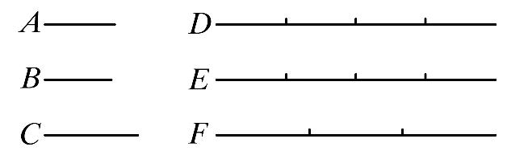
设A、B是相等的量，且设C是另外的任意量．
则可证量A、B的每一个与量C相比，其比相同；且量C比量A、B的每一个，其比相同．
设取定A、B的等倍量D、E，且另外一个量C的倍量为F，
则，因为D是A的倍量，E是B的倍量，其倍数相等；这时，A等于B，故，D等于E.
但是，F是另外的任意量．
如果，D大于F，E也大于F；如果前二者相等，后二者也相等；如果D小于F，E也小于F.
又由于，D、E是A、B的同倍量，这时，F是量C的任意倍量，故，A比C如同B比C. ［v.定义5］
其次，可证量C比量A、B，其比相同．
因为，可用同样的作图，类似地，我们可以证明D等于E；又F是某个另外的量．
如果，F大于D，F也就大于E；如果F等于D，则F也等于E；如果F小于D，则F也小于E.
又F是C的倍量，这时D、E是A、B另外的倍量；
故，C比A如同C比B. ［v.定义5］
推论 由此容易得出，如果任意的量成比例，则其反比也成比例．
证完
在这个命题中类似地使用了在命题4下面讨论过的词
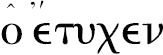
．取C的任意倍数F，现在有了四条钱，“F是另一个量”．当然，它不是随便的任意量，而西姆森取掉了这个句子，但是这一次没有提及注意它．关于这个命题的推论，海伯格说该推论放在此处在原稿中是最好的地方；正如奥古斯特（August）注意到的，如果泰奥恩把这个命题放置的地方（在v.4的末尾）是正确的地方，那么，这个命题的第二部分的证明就是不必要的．但是，其真实情况是推论不在此处．这个命题所证的结果是：若A、B相等，并且C是任意另一个量，则同时有两个结论，（1）A比C等于B比C．（2）C比A等于C比B．其第二个结论不是由第一个结论建立的（因为它应当证明推出推论是合理的），而是由第一个结论所依赖的假设推出的；并且这不是四个量之间的一个一般形式的比例，而只是结果相等的特殊情形．
亚里士多德在《天象论》（Meteorologica）iii.5，376 a 14～16中默认其逆是成立的（结合欧几里得的命题vi.11的解）．
命题8 有不相等的二量与同一量相比，较大的量比这个量大于较小的量比这个量；反之，这个量比较小的量大于这个量比较大的量．
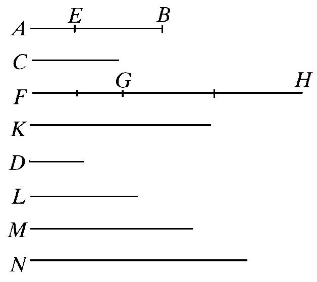
设AB、C是不相等的量，且AB是较大者，而D是另外任意给定的量．
则可证AB与D的比大于C与D的比；且D与C的比大于D与AB的比．
因为，AB大于C，取BE等于C.
那么，如果对量AE，EB中较小的一个量，加倍至一定次数时它就大于D.
［v.定义4］
［情况1.］
首先设，AE小于EB，加倍AE，并令FG是AE的倍量，它大于D.
则无论FG是AE的几倍，就取GH为EB同样的倍数，且取K为C同样的倍数；
又令L是D的二倍，M是它的三倍，而且一个接一个逐倍增加，直到D递加到首次大于K为止．设它已被取定，而且是N，它是D的四倍．这是首次大于K的倍量．
故K是首次小于N的量．所以，K不小于M.
又因为FG是AE的倍量，GH是EB的倍量，其倍数相等．故，FG是AE的倍量，FH是AB的倍量，其倍数相等． ［v.1］
但是，FG是AE的倍量，K是C的倍量，其倍数相等，故，FH是AB的倍量，K是C的倍量，其倍数相等，从而，FH、K是AB、C的同倍量．
又因为GH是EB的倍量，K是C的倍量，其倍数相等，且EB等于C.
于是GH等于K.
但是，K不小于M；故，GH也不小于M.
又FG大于D，于是整体FH大于D与M的和．
但是D与M的和等于N，因此M是D的三倍．且M，D的和是D的四倍，这时，N也是D的四倍；因而得到M，D的和等于N.
但是FH大于M与D的和，故FH大于N，这时K不大于N.
又FH、K是AB、C的同倍量，这时N是另外任意取定的D的倍量，
故AB比D大于C比D ［v.定义7］
其次，可证D比C也大于D比AB.
因为，用相同的作图，我们可以类似地证明N大于K，这时N不大于FH.
又N是D的倍量，这时，FH、K是AB、C的另外任意取定的同倍量，
故D比C大于D比AB. ［v.定义7］
［情况2.］
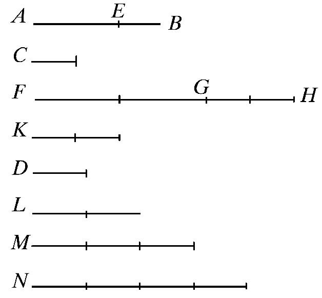
又设，AE大于EB.
则加倍较小的量EB到一定倍数，必定大于D.
［v.定义4］
设加倍后的GH是EB的倍量且大于D；
又无论GH是EB的多少倍，也取FG是AE的同样多少倍，K是C的同样多少倍．
我们可以证明FH、K是AB、C的同倍量；
且类似地，设取定D的第一次大于FG的倍量N，这样，FG不再小于M．
但是，GH大于D，所以，整体FH大于D、M的和，即大于N．
现在，K不大于N，因此FG也大于GH，即大于K，而不大于N．
用相同的方法，我们可以把以后的论证补充出来．
证完
在希腊文本中的证明的两种情形实际上可以压缩成一种，并且这两种的陈述者过多地强调了它们的不同．在每一种情形，选择了两个线段AE，EB中较小者并使得它的倍数大于D是必要的；在第一种情形，选取的是AE，在第二种情形，选取的是EB．但是，在第一种情形，逐次加倍D，为了找到第一个大于GH（或者K）的倍数，在第二种情形，取的是第一个大于FG的倍数．这个区别是不必要的；D的第一个大于GH的倍数同样地可以用在第二种情形．最后，使用量K在两种情形都是不必要的；它没有实质上的用处，而只会增长其证明．由于这些原因，西姆森认为泰奥恩以及另外某些编辑使得这个命题有了缺陷．然而，这似乎是一个靠不住的假设；因为它不是伟大的希腊几何学家分别讨论几种不同情形的习惯（例如，在i.7及i.35中欧几里得证明了一种情形，而把其余的情形留给了读者）．也存在许多例外．例如，欧几里得的iii.25和33；并且我们知道许多基本命题是首先讨论其特殊情形，而后把它推广到一般情形．表述一个较新理论的卷v.可能企望展现比前几卷更多的不必细分的例子．使用K也不伤其证明的纯洁性．
然而，西姆森的证明当然有特色，并且包括了AE等于EB的情形以及AE，EB都大于D的情形（尽管这些情形几乎不值得分开讨论）．
（1）如果AE，EB中非较大者不小于D，则取FG，GH分别为AE，EB的两倍．
（2）如果AE、EB中非较大者小于D，则可以加倍这个量，使其大于D，不管它是否是AE或EB．
设它加倍到大于D，并且设另一个照样加倍；设FG是AE的这样的倍数，GH是EB的这样的倍数．
因而，FG和GH都大于D．
又，在每种情形下，取L为D的二倍，取M为D的三倍，等等，直到D的这个倍数，它第一次大于GH．
设N是D的那个倍数，它第一次大于GH，设M是D的倍数，它相邻N且小于N．
那么，因为N是D的第一个大于GH的倍数，所以相邻的前面的倍数都不大于GH，即GH不小于M．
又因为FG关于AE的倍数与GH关于EB的倍数相同，所以GH关于EB的倍数与FH关于AB的倍数相同； ［v.1］
因而，FH，GH是AB，EB的同倍数．
已证GH小于M，并且由作图，FG大于D，因而，整体FH大于M，D之和．
但是M，D合在一起等于N，因而，FH大于N．
而GH大于N，并且FH，GH是AB，BE的同倍数，N是D的一个倍数，因而，AB比D大于BE（或者C）比D． ［v.定义7］
同样地，D比BE大于D比AB．
由同样的作图，用同样的方式，可证N大于GH，但不大于FH；并且N是D的一个倍数，GH，FH是EB，AB的同倍数．因而，D比EB大于D比AB． ［v.定义7］
用更符号化形式，可能更容易掌握上述证明．
取C的m倍，并且取AB的超过C的部分（即AE）的同倍数，使得每一个都大于D．并且设pD是第一个大于mC的D的倍数，nD是相邻的较小的D的倍数．
因为mC不小于nD，并且由作图m（AE）大于D，所以mC与m（AE）的和大于nD与D的和，即m（AB）大于pD．
又由作图，mC小于pD，因而［v.定义7］，AB比D大于C比D．
又因为pD小于m（AB），并且pD大于mC，所以D比C大于D比AB．
命题9 几个量与同一个量的比相同，则这些量彼此相等；且同一量与几个量的比相同．则这些量相等．
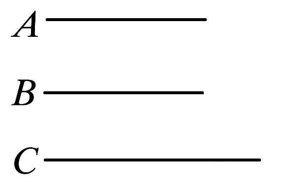
设量A、B各与C成相同的比．
则可证A等于B．
因为，如果不是这样，那么，量A、B各与C的比不相同， ［v.8］
但已知它们有相同的比，故A等于B.
又若C与量A、B的每一个成相同的比．则可证A等于B．
因为，如果不是这样，即C与量A、B的每一个成不相同的比． ［v.8］
但是，已知它们成相同的比，于是A等于B．
证完
若A比C等于B比C，或者，若C比A等于C比B，则A等于B．
西姆森给这个命题一个更清楚的证明，它的优点是只涉及基本的第5和第7定义，而不涉及前述命题的结论，正如在下一个注解里看到的，它可能造成循环论证，因而是不可靠的．
“设A、B中的每一个对C的比相同，则A等于B．”
因为若它们不相等，则它们中的一个大于另一个，设A是较大者．
在前一个命题中已证明，有A和B的某个同倍数，以及C的某个倍数，使得A的倍数大于C的倍数，而B的倍数不大于C的倍数．
设这样的倍数已经取定，并设D，E就是A，B的同倍数，并且F是C的倍数，于是，D大于F，而E不大于F．
但是，因为A比C等于B比C，并且D，E是A，B的同倍数，F是C的倍数，D大于F，所以，E必然大于F． ［v.定义5］
而E不大于F，因而，A大于B是不可能的．
其次，设C对A，B中的每一个的比相同，则A等于B．
因为如果不是这样，它们中的一个大于另一个，设A是较大者．
因而，正如命题8中所证明的，有C的倍数F，以及B和A的某个同倍数E和D，使得F大于E，而不大于D．
但是，因为C比B等于C比A，并且C的倍数F大于B的倍数E，所以，C的倍数F大于A的倍数D． ［v.定义5］
但是，F不大于D．因而，A大于B不可能，故A等于B．
命题10 一些量比同一量，比大者，该量也大；且同一量比一些量，比大者，该量较小．
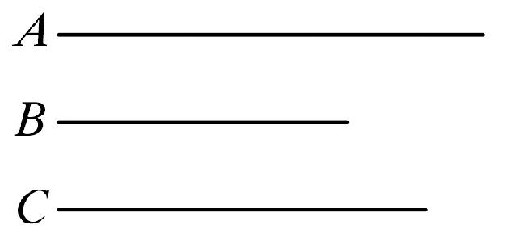
设A比C大于B比C．
则可证A大于B．
因为，如果不是这样，则或者A等于B或者A小于B．
现在，设A不等于B，因为，在这种情况下，已知量A、B的每一个比C有相同的比，
［v.7］
但是，它们的比不相同；
所以，A不等于B．
又，A也不小于B，
因为，在这种情况下，A比C小于B比C. ［v.8］
但是，已知不是这样，
所以，A不小于B．
但是，已经证明了又不相等．
所以A大于B．
再设，C比B大于C比A.则可证B小于A．
因为，如果不是这样，则或者相等或者大于．
现在，设B不等于A，
因为，在这种情况下，C比量A、B的每一个有相同的比，
［v.7］
但是，已知不是这样，
所以，A不等于B.
也不是B大于A；
因为，在这种情况下，C比B小于C比A. ［v.8］
但是，已知不是这样，
所以，B不大于A．
但是，已经证明了一个并不等于另一个，
所以，B小于A．
证完
我认为在西姆森对《原本》评论性研究的深刻性方面以及在他研究欧几里得的巨大的服务性工作中，找不到更好的例子与关于这个命题的令人钦佩的注释相比较，在这个注释中，他指出了该文本的证明的一个严重缺陷．
因为这是欧几里得第一次讨论比的大小，通过检查这个证明的步骤，就会发现他对这个术语附加了比它的名称更多的含义，又由于关于比的大小的全部内容只有比大于的定义（定义7），所以他必须继续向前．现在，我们在讨论比的大小时，不能像对量一样使用同一术语，事实上，欧几里得用事实已经明确地指出了这一点，在卷Ⅰ中有一个公理，即等于同一个量的量彼此相等．相反地，在命题11中，他证明了与同一个比相同的比也彼此相同．
现在让我们检查一下该文本中的证明的步骤．首先，该文本中说：
“A大于B，因为若不然，则A等于B或者A小于B．
现在，A不等于B；否则，A、B对C有相同的比， ［v.7］
但它们不相等，所以，A不等于B．”
正如西姆森的评注，这个推理的要点如下：
若A比C与B比C相同，然后——假设取A，B的任意同倍数，以及C的任意倍数——由定义5，若A的倍数大于C的倍数，则B的倍数也大于C的倍数．
但是，依据定义7，由假设（A比C大于B比C）推出，必然有A，B的某个同倍数以及C的某个倍数，使得A的倍数大于C的倍数，而B的倍数不大于C的同倍数．
而这个与前述假定A比C与B比C相同的推论相矛盾．
因而这个假定是不可能的．
这个证明继续如下：
“也不是A小于B．因为若A小于B，则A比C小于B比C， ［v.8］
但是，这不成立，因而，A不小于B．”
此时，困难出现了，如前所述，我们必须使用定义7．“A比C小于B比C”或者其等价命题B比C大于A比C，这意味着存在B，A的同倍数以及C的某个倍数，使得
（1）B的倍数大于C的倍数，而
（2）A的倍数不大于C的倍数，
并且应当证明，如果这个命题的假设是真的，即A比C大于B比C，则这个绝不能发生；即应当证明，在后一种情形，当B的倍数大于C的倍数时，A的倍数总是大于C的倍数（因为当证明了这个，显然有B比C不大于A比C）．但是，这个却未证明（参考德·摩根关于v.定义7的注释，P.130）．因而，没有证明上述从假定A小于B得出的推论与上述假设矛盾．故证明失败了．
西姆森认为这个证明不是欧几里得的，而是另一个人的工作，这个人显然“错误地应用了对量来说是显然的结论于比，即一个量既不能大于也不能小于另一个量”．
西姆森给出了一个满意的和简单的证明．
“设A比C大于B比C，则A大于B．
因为A比C大于B比C，所以存在A，B的某个同倍数以及C的某个倍数，使得A的倍数大于C的倍数，而B的倍数不大于C． ［v.定义7］
设它们已取定，并设D，E是A，B的同倍数，F是C的倍数，使得
D大于F
而 E不大于F．
因而， D大于E．
又因为D和E是A和B的同倍数，以及D大于E，因而
A大于B． ［西姆森的第4公理］
其次，设C比B大于C比A，则B小于A．
因为存在C的某个倍数F以及B和A的某个同倍数E和D，使得F大于E，而不大于D． ［v.定义7］
因而，E小于D，并且由于E和D是B和A的同倍数，所以B小于A．”
命题11 凡与同一个比相同的比，它们也彼此相同．
设A比B如同C比D，
又设C比D如同E比F.
则可证A比B如同E比F.
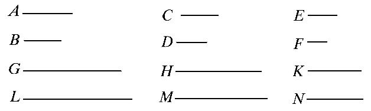
因为，可取A、C、E的同倍量为G、H、K，又任意取定B、D、F的同倍量为L、M、N.
那么，因为A比B如同C比D；
又因为已经取定了A、C的同倍量G、H；
且另外任意取定了B、D的同倍量L、M.故，如果G大于L，H也大于M；
如果前二者相等，则后二者也相等；
如果G小于L，则H也小于M.
又因为，C比D如同E比F，
而且已经取定了C、E的同倍量H、K，
又另外，任意取定了D、F的同倍量M、N.
故，如果H大于M，则K也大于N；
如果前二者相等，则后二者也相等；
如果H小于M，则K也小于N.
但是，我们看到，如果H大于M，G也大于L；如果前二者相等，则后二者也相等；如果H小于M，则G也小于L.
这样一来，如果G大于L，则K也大于N；如果前二者相等，则后二者也相等，如果G小于L，则K也小于N.
又，G、K是A、E的同倍量，
这时，L、N是任意给定的B、F的同倍量．
所以，A比B如同E比F.
证完
代数地，若
a：b=c：d，
并且 c：d=e：f，
则 a：b=e：f.
应当注意，在习惯上应用未完成体来引用前面得到的结果．代替“But it was proved that，if H is in excess of M，G is also in excess of L”，（但是，已证明，若H大于M，则G也大于L，）在希腊文本中用“But if H was in excess of M，G was also in excess of L”，
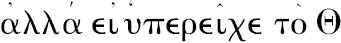
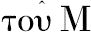
，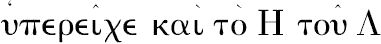
.（但是，若H大于M，则G也大于L.）这个命题以及v.16和v.24默默地使用在亚里士多德的《天象论》的几何部分（Meteo ologica iii.5，376a22-26）．
命题12 如果有任意多个量成比例，则其中一个前项比相应的后项如同所有前项的和比所有后项的和．
设任意多个量A、B、C、D、E、F成比例，即A比B如同C比D，又如同E比F.
则可证A比B如同A、C、E的和比B、D、F的和．
取A、C、E的同倍量G、H、K.
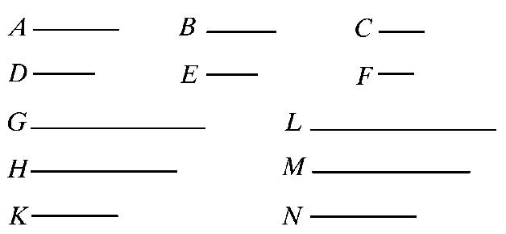
且另外任意取B、D、F的同倍量L、M、N.
因为，A比B如同C比D，也如同E比F.
又，已取定了A、C、E的同倍量G、H、K，
又，取定B、D、F的同倍量为L、M、N.
故，如果G大于L，H也大于M，K也大于N.
如果前二者相等，则后二者也相等；
如果G小于L，则H也小于M，K也小于N.
这样一来，进一步可得，
如果G大于L，则G，H，K的和大于L，M，N的和．
如果前二者相等，则后二者和也相等；
如果G小于L，则G，H，K的和小于L，M，N的和．
现在，G与G、H、K的和是A与A、C、E的和的同倍量．因为，如果有任意多个量，分别是同样多个量的同倍量，那么，无论哪些个别量的倍数是多少，前者的和也是后者的和的同倍量．
［v.1］
同理，L与L、M、N的和也是B与B、D、F的和的同倍量．
所以，A比B如同A、C、E的和比B、D、F的和．
［v.定义5］
证完
代数地，若a：a'=b：b'=c：c'，等等，则每个比等于比（a+b+c+…）：（a'+b'+c'+…）．
这个定理被亚里士多德在Eth.Nic.v.7，1131 b 14中简短地引述为“整体比整体等于部分比部分”．
命题13 如果第一量比第二量与第三量比第四量有相同的比，又第三量与第四量的比大于第五量与第六量的比．则第一量与第二量的比也大于第五量与第六量的比．
设第一量A比第二量B与第三量C比第四量D有相同的比，
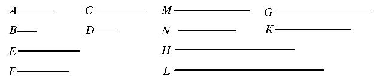
又设，第三量C比第四量D，其比大于第五量E与第六量F的比．
则可证第一量A比第二量B，其比也大于第五量E与第六量F的比．
因为，有C、E的某个同倍量，且D、F有另外任意给定的同倍量，使得C的倍量大于D的倍量．
这时，E的倍量不大于F的倍量． ［v.定义7］
设它们已经被取定，且令G、H是C、E的同倍量，又K、L是另外任意给定的D、F的同倍量．
由此，G大于K，但是H不大于L.
又，无论G是C的几倍，设M也是A的几倍，且，无论K是D的几倍，设N也是B的几倍．
现在，因为A比B如同C比D.
又，已经取定A、C的同倍量M、G，且，另外任意给定B、D的同倍量N、K.
故，如果M大于N，G也大于K；
如果前二者相等，则后二者也相等；
如果，M小于N，则G也小于K. ［v.定义5］
但是，G大于K，于是，M也大于N.
但是，H不大于L，且，M、H是A、E的同倍量，
又，对N、L另外任意取定同倍量B、F，
所以，A比B大于E比F. ［v.定义7］
证完
代数地，若
a：b=c：d，
并且 c：d>e：f，
则 a：b>e：f.
在证明的第一行“因为”的后面，泰奥恩加上了“C比D大于E比F”，因而“存在某个同倍数”开始了主要的句子．
在希腊文本中，在“且D，F有另外任意给定的同倍量”之后，我把“使得”（such that）换成了“并且”（and），便成了“并且C的倍数大于D的倍数”．
下面展示欧几里得的证明方法．
因为 c：d>e：f，
所以有c，e的某个同倍数mc，me，以及d，f的某个同倍数nd，nf，使得
mc>nd，而me
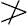
nf，但是，因为 a：b=c：d，
所以，相应地有 ma>=<nb， mc>=<nd.
并且mc>nd，因而
ma>nb，而（由上述）menf.
故 a：b>e：f.
西姆森增加了下述推论．
“若第一个比第二个大于第三个比第四个，而第三个比第四个等于第五个比第六个，同样地可以证明第一个比第二个大于第五个比第六个．”
然而，这个不值得另立命题，因为它只是改变了假设中两部分的顺序．
命题14 如果第一量比第二量与第三量比第四量有相同的比，且第一量大于第三量，则第二量也大于第四量；如果前二量相等，则后二量也相等，如果第一量小于第三量，则第二量也小于第四量．
因为，可令第一量A比第二量B与第三量C比第四量D有相同的比，又设A大于C，
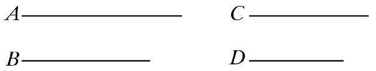
则可证B也大于D.
因为，A大于C，且B是另外任意的量，故，A比B大于C比B. ［v.8］
但是，A比B如同C比D，
故，C比D大于C比B， ［v.13］
但是，同一量与二量相比，比大者，该量反而小，
［v.10］
故，D小于B.
由此，B大于D.
类似地，我们可以证明，如果A等于C，B也等于D；而且如果A小于C，B也小于D.
证完
代数地，若
a：b=c：d，
相应地，若 a>=<c，则 b>=<d.
西姆森对这个命题的第二、第三部分给出了特别的证明，而欧几里得只说了“同理可证……”．
“第二，如果A等于C，则B等于D；因为A比B等于C比D，所以，B等于D． ［v.9］
第三，如果A小于C，则B小于D．
因为C大于A，又因为C比D等于A比B，所以，由第一种情形，D大于B，因而B小于D．”
亚里士多德在《天象论》（iii.5，376 a 11-14）中引用了其等价命题，若a>b则c>d.
命题15 部分与部分的比按相应的顺序与它们同倍量的比相同．
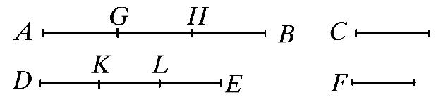
设AB是C的倍量，DE是F的倍量，其倍数相同．
则可证C比F如同AB比DE.
因为，AB是C的倍量，DE是F的倍量，其倍数相同．因此，在AB中存在着多少个等于C的量，则在DE中也存在着同样多少个等于F的量．
设将AB分成等于C的量AG，GH，HB.
且将DE分成等于F的量DK，KL，LE.
又，因为量AG，GH，HB的个数等于量DK，KL，LE的个数．
又因为AG，GH，HB彼此相等，且DK，KL，LE也彼此相等．
故，AG比DK如同GH比KL，也如同HB比LE. ［v.7］
所以，其中一个前项比后项如同所有前项的和比后项的和． ［v.12］
故，AG比DK如同AB比DE.
但是，AG等于C且DK等于F，
所以，C比F如同AB比DE.
证完
代数地
a：b=ma：mb.
命题16 如果四个量成比例，则它们的更比也成立．
设A、B、C、D是四个成比例的量．由此，A比B如同C比D.
则可证它们的更比也成立．
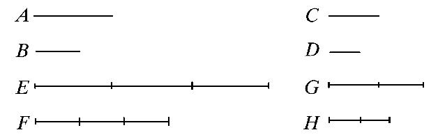
即，A比C如同B比D.
取定A、B的同倍量E、F，
又，另外任意取定C、D的同倍量G、H.
那么，因为E是A的倍量，F是B的倍量，其倍数相同．且部分与部分的比与它们同倍量的比相同． ［v.15］
故，A比B如同E比F.
但是，A比B如同C比D，
所以也有，C比D如同E比F. ［v.11］
又因为G、H是C、D的同倍量，
故，C比D如同G比H. ［v.15］
但是，C比D如同E比F，
所以也有E比F如同G比H. ［v.11］
但是，如果四个量成比例，且第一量大于第三量，
则第二量也大于第四量；
如果前二者相等，则后二者也相等；
如果第一量小于第三量，则第二量也小于第四量． ［v.14］
因此，如果E大于G，F也大于H；
如果前二者相等，则后二者也相等；
如果E小于G，则F也小于H.
现在，E、F是A、B的同倍量．
且G、H是另外任意取的C、D的同倍量．
所以，A比C如同B比D. ［v.定义5］
证完
代数地，若
a：b=c：d，
则 a：c=b：d，
取a，b的同倍数ma，mb，以及c，d的同倍数nc，nd，由v.15，有
a：b=ma：mb
c：d=nc：nd，
又因为 a：b=c：d，
有［v.11］ ma：mb=nc：nd，
所以［v.14］，相应地，若
ma>=<nc，则 mb>=<nd，
因而， a：c=b：d，
亚里士多德在《天象论》（iii.5，376 a 22-24）中默默地使用了这个定理．
这个命题中的四个量必须是同类型的，西姆森在叙述过程中插入了“是同类型的”．
这是在史密斯（Smith）及布里安特（Bryant）的《欧几里得原本，1901》中用vi.1证明的欧几里得卷V中的命题的第一个命题，该命题中的几何量只限于线段或直线形的面积；当然，这个证明比欧几里得的证明更容易掌握．其证明如下：
要证明若同类型（线段或者直线形的面积）的四个量成比例，则其更比例也成立．
设P，Q，R，S是同类型的四个量，并且
P：Q=R：S，
要证 P：R=Q：S，
首先，设所有的量是面积．
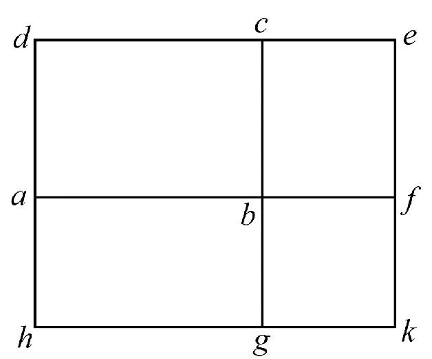
作一个矩形abcd，其面积为P，并且在bc上作矩形bcef，其面积为Q，在ab，bf上分别作矩形ag，bk分别等于R，S．
那么，因为矩形ac，be同高，所以它们的比等于它们的底的比． ［vi.1］
因而 P：Q=ab：bf，
但是 P：Q=R：S，
所以 R：S=ab：bf， ［v.11］
即 矩形ag：矩形bk=ab：bf，
因而（由vi.1的逆），矩形ag，bk同高，于是k在直线hg上．
故，矩形ac，ag有同高ab；同样地，矩形be，bk有同高bf．
所以 矩形ac：矩形ag=bc：bg，
并且 矩形be：矩形bk=bc：bg. ［vi.1］
所以 矩形ac：矩形ag=矩形be：矩形bk ［v.11］
即 P：R=Q：S.
其次，设这些量是线段AB，BC，CD，DE，作具有同高的矩形Ab，Bc，Cd，De．
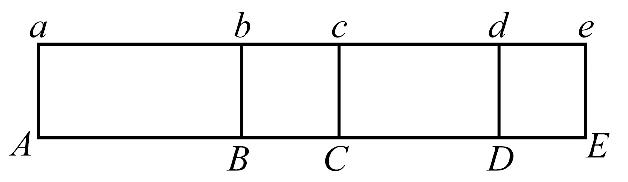
则 Ab：Bc=AB：BC，
并且 Cd：De=CD：DE， ［vi.1］
但是 AB：BC=CD：DE，
所以 Ab：Bc=Cd：De. ［v.11］
因此，由前面的情形，
Ab：Cd=Bc：De，
又因为这些矩形同高，所以
AB：CD=BC：DE.
命题17 如果几个量成合比，则它们也成分比．
设AB，BE，CD，DF成合比．
即，AB比BE如同CD比DF.
则可证它们也是分比，即AE比EB如同CF比DF.
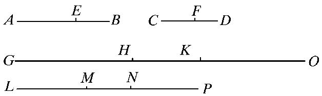
因为，可设AE，EB，CF，FD的同倍量各是GH，HK，LM，MN，
又，另外任意取定EB，FD的同倍量KO，NP.
那么，因为GH是AE的倍量，HK是EB的倍量，其倍数相同．
故，GH是AE的倍量，GK是AB的倍量，其倍数相同．
［v.1］
但是，GH是AE的倍量，LM是CF的倍量，其倍数相同．
故，GK是AB的倍量，LM是CF的倍量，其倍数相同．
又因为，LM是CF的倍量，MN是FD的倍量，其倍数相同，
故，LM是CF的倍量，LN是CD的倍量，其倍数相同． ［v.1］
但是，LM是CF的倍量，GK是AB的倍量，其倍数相同，
故，GK是AB的倍量，LN是CG的倍量，其倍数相同．
从而，GK、LN是AB、CD的等倍量．
又，因HK是EB的倍量，MN是FD的倍量，其倍数相同，
且KO也是EB的倍量，NP是FD的倍量，其倍数相同．
故，和HO也是EB的倍量，MP是FD的倍量，其倍数相同．
［v.2］
又，因为AB比BE如同CD比DF.
且，已取定AB、CD的同倍量GK、LN，
且，EB、FD的同倍量为HO、MP，
故，如果GK大于HO，则LN也大于MP.
如果前二者相等，则后二者也相等；
如果GK小于HO，则LN也小于MP.
令GK大于HO，
那么，如果由以上每一个减去HK，则GH也大于KO.
但是，我们已经看到，如果GK大于HO，LN也大于MP.
所以，LN也大于MP，
又，如果由它们每一个减去MN，则LM也大于NP；
由此，如果GH大于KO，LM也大于NP.
类似地，我们可以证得，
如果GH等于KO，则LM也等于NP；
如果GH小于KO，则LM也小于NP.
又，GH、LM是AE、CF的同倍量．
这时，KO、NP是另外任意取的EB、FD的同倍量．
所以，AE比EB如同CF比FD.
证完
代数地，若
a：b=c：d，
则 （a-b）：b=（c-d）：d.
我已经注意到某种奇怪的使用分词
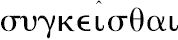
和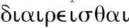
来表达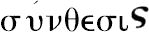
与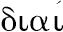
-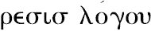
的专业含义．或者我们说成合比（componendo）与分比（separando），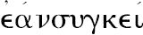
-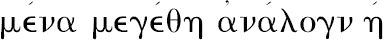
，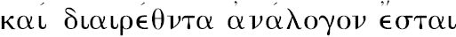
，字面的意思是“若这些量组合起来成比例，则把它们分开也成比例，”其意义是“若一个由两部分组成的量比其中一部分等于另一个由两部分组成的量比其中一部分，则第一个量的剩余部分比前面取的那一部分等于第二个量的剩余部分比前面取的那一部分．”用代数符号，a，c是整量，b，a-b及d，c-d分别是部分及剩余部分．其公式可以这样叙述：若 （a+b）：b=（c+d）：d，
则 a：b=c：d，
在此a+b，c+d是整量，而b，a及d，c分别是部分及剩余部分．看一看最后这个公式，我们注意到“被分开的”量不是a，b，c，d，而是组合量a+b，b，c+d，d.
由于这个证明有点长，用更符号化的形式可以压缩其证明．为了避免减号，我们采取下面的假设形式
a+b比b等于c+d比d，
取四个量a，b，c，d的任意同倍数
ma，mb，mc，md，
以及两个后项的另外的任意同倍数 nb，nd．
那么，由v.1，m（a+b），m（c+d）是a+b，c+d的同倍数，并且，由v.2，（m+n）b，（m+n）d是b，d的同倍数．
因而，由定义5，因为（a+b）：b等于（c+d）：d，相应地，若
m（a+b）>=<（m+n）b， 则m（c+d）>=<（m+n）d.
从m（a+b），（m+n）b减去公共部分mb，并且从m（c+d），（m+n）d减去公共部分md，相应地，若
ma>=<nb， 则mc>=<nd.
但是ma，mc是a，c的任意同倍数，并且nb，nd是b，d的任意同倍数，因而，由定义5，
a比b等于c比d．
史密斯及布里安特对这个证明做了一些修改，接着给出了下一个命题的另一个证明．
命题18 如果几个量成分比，则它们也成合比．
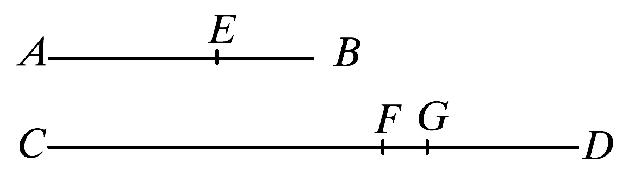
设AE，EB，CF，FD是成分比的量．即，AE比EB如同CF比FD.
则可证它们也成合比．即，AB比BE如同CD比FD.
因为，如果CD比DF不相同于AB比BE.
那么，AB比BE如同于CD比或者小于DF的量，或者大于DF的量．
首先，设在那个比中的量DG小于DF.
则，因为AB比BE如同CD比DG，
它们是成合比例的量．这样一来，它们也成分比例． ［v.17］
故，AE比EB如同CG比GD.
但是，由假设也有
AE比EB如同CF比FD.
故也有，CG比GD如同CF比FD. ［v.11］
但是，第一量CG大于第三量CF，
故，第二量GD也大于第四量FD. ［v.14］
但是，它也小于它：这是不可能的．
故，AB比BE不相同于CD比一个较FD小的量．
类似地，我们也可证明也不是比一个较FD大的量．
所以，在那个比例中应是FD自身．
证完
代数地，若
a：b=c：d，
则 （a+b）：b=（c+d）：d，
在这个命题的叙述中，同样有特别的使用
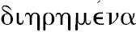
和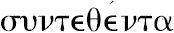
，正像在上面叙述中使用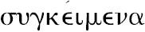
和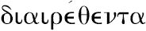
．实际上，正如代数形式显示的，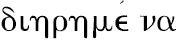
可以略去．下面是欧几里得使用的证明方法．
已知 a：b=c：d，
若有可能，假定
（a+b）：b=（c+d）：（d±x），
因而，其分比［v.17］
由v.11，
但是 （c-x）<c，而（d+x）>d.
并且 （c+x）>c，而（d-x）<d，
这些关系与v.14矛盾．
西姆森指出［如萨凯里（Saccheri）］在他之前所见］，欧几里得的证明是不合理的，由于没有证明就假定了对任意三个量，其中至少有两个量是同类型的，必然存在第四个比例项．克拉维乌斯（Clavius）及另外一些编辑把这个作为一条公理．但是它远不是公理；一直到vi.12，欧几里得用作图证明了三个已知量是线段的特殊情形它是真的．
为了取掉这个缺陷，必须（1）预先证明欧几里得如此假定的命题，或（2）证明v.18与它无关．
萨凯里建议对于面积和线段，用欧几里得的vi.1，2和12来证明所假定的命题．正如他所说，没有什么可以阻止欧几里得把这些命题插在v.17之后，而后用它们证明v.18．当三个已知量是线段时，用vi.12能作出第四个比例项；而vi.12只依赖于vi.1和2．萨凯里说，此时，我们一旦发现了作一条线段，使得它是三个已知线段的第四个比例项的方法，我们就有了一般问题的解法，“作一条线段，使其与已知线段的比等于两个多边形（之间）的比．”因为只要变换两个多边形为两个等高的三角形，而后作一条线段，使得它是两个三角形的底以及已知线段的第四个比例项．
我们将会看到，萨凯里的方法类似于史密斯和布里安特证明欧几里得的定理v.16，17，18，22所采用的方法．直至现在，用vi.1解决了线段和直线形面积的情形．
德·摩根给出了所假定命题的一般证明的概要，B是任一个量，并且P和Q是同类型的两个量，存在一个量A，使得A比B等于P比Q．
“假定有理由在推论中取任意量的任意可除得尽的部分；实际上，用连续二分的办法足以得到可除得尽的部分；前面证明的比的大于和小于的准则都没有用在任意一个比（scale）与另外一个比的比较上．”
“（1）若M比B大于P比Q，则每个大于M的量比B也大于P比Q，并且某些小于M的量比B也大于P比Q；又，若M比B小于P比Q．则每个小于M的量比B也小于P比Q，并且某些大于M的量比B也小于P比Q，例如，设15M在22B和23B之间，而15P在22Q之前，令15M大于22B的部分为Z；那么，若N小于M，小于部分小于Z的15个部分，则15N在22B和23B之间，或者说，N小于M，而N比B大于P比Q，对于其他情形，情况类似．
（2）当然M可以取得如此小，使得M比B小于P比Q；并且如此大，使得M比B大于P比Q；并且因为我们绝不能用增大M把较大的比过渡到较小的比，由此可以推出，当我们从第一个指定的值过渡到第二个指定的值时，我们就会发现一个中间量A，使得任一个小于A的量比B小于P比Q，而任一个大于A的量比B大于P比Q．现在，A比B不能小于P比Q，因为那就会有某些大于A的量比B也小于P比Q；A比B也不能大于P比Q，因为那就会有某些小于A的量比B也大于P比Q；因而，A比B等于P比Q．上面提到的前面已证的命题证明了这三个选项就是仅有的选项．”
Ⅴ.18的另一个证明．
西姆森的另一个证明基于v.5，6．因为第18命题是第17命题的逆，并且第17命题是用v.1和2的证明的，而v.5和6是v.1和2的逆，所以用v.5和6来证明v.18就是很自然的；并且西姆森认为欧几里得必然应用这个方法来证明v.18，由于“第5和第6命题没有进入本卷已有的任一命题的证明之中，也没有用在《原本》的任一其他命题之中．”并且“第5和第6命题已经无疑地放在第5卷之中，其原因是为了该卷中的某些命题，正如关于同倍数的所有其他命题一样”．
然而，我认为西姆森的证明太长和太难，除非把它变成如下的符号形式．
假定a比b等于c比d，要证明a+b比b等于c+d比d．
取后面四个量的任意同倍数，
m（a+b），mb，m（c+d），md，
并且取b，d的任意同倍数 nb，nd，
显然，若 nb大于mb，
则 nd大于md；
若等于，则等于；若小于，则小于．
Ⅰ.假定nb不大于mb，于是nd也不大于md．
现在 m（a+b）大于mb；
因而 m（a+b）大于nd．
类似地 m（c+d）大于nd．
Ⅱ.假定nb大于mb．
因为m（a+b），mb，m（c+d），md，是（a+b），b，（c+d），d的同倍数，
ma关于a的倍数等于m（a+b）关于（a+b）的倍数，
并且mc关于c的倍数等于m（c+d）关于（c+d）的倍数，
于是ma，mc是a，c的同倍数． ［v.5］
又nb，nd是b，d的同倍数，并且mb，md也是b，d的同倍数，因而，（n-m）b，（n-m）d是b，d的同倍数，并且，不论n-m等于单位或另一个整数［v.6］，由定义5可以推出：因为a，b，c，d成比例，所以
若 ma大于（n-m）b，
则 mc大于（n-m）d.
若等于，则等于，若小于，则小于．
（1）若m（a+b）大于nb，从每一个减去mb，有
ma大于（n-m）b，
因而 mc大于（n-m）d，
对于每一个加md，m（c+d）大于nd.
（2）类似地，可以证明
若 m（a+b）等于nb，
则 m（c+d）等于nd．
（3）类似地，
若 m（a+b）小于nb，
则 m（c+d）小于nd．
但是（在上述Ⅰ中），已证明在nb不大于mb的情形下，
m（a+b）大于nb，
并且 m（c+d）大于nd，
因此，不论m和n的值是什么，m（a+b）大于，等于或小于nd，由m（a+b）大于，等于或小于nb而定．
因而，由定义5
a+b比b等于c+d比d．
托德亨特（Todhunter）依据奥斯清（Austin）（Examination of the first six books of Euclid's Elements）给出了下述简短证明．
“设AE比EB如同CF比FD，则
AB比BE如同CD比DF．
因为，既然AE比EB如同CF比FD，所以，由更比
AE比CF如同EB比FD． ［v.16］
并且，因为一个前项比一个后项如同前项的和比后项的和． ［v.12］
所以，EB比FD如同AE，EB之和比CF，FD之和，
即 AB比CD如同EB比FD．
因而，由更比
AB比BE如同CD比FD．”
反对这个证明的意见认为这个证明只是在v.16有效时才是有效的，即所有四个量是同类型时才是有效的．
西姆森和布里安特的证明适用于所有四个量是线段，或者所有四个量是直线形的面积，或者是一个前项及它的后项是线段而另一前项及它的后项是直线形的面积．
假设 A：B=C：D．
首先，设所有的量是面积，作一个面积为A的矩形abcd，并在bc上作一个面积为B的矩形bcef.
又在ab，bf上作矩形ag，bk，使其分别等于C，D．
那么，因为矩形ac，be有同高bc，它们的比等于它们的底的比． ［vi.1］
因此， ab：bf=矩形ac：矩形be
=A：B
=C：D
=矩形ag：矩形bk.
因而［vi.1的逆］矩形ag，bk同高，于是k在线段hg上．
因此， （A+B）：B=矩形ae：矩形de
=af：bf
=矩形ak：矩形bk
=（C+D）：D.
其次，设量A，B是线段，而C，D是面积．
设ab，bf等于线段A，B，并且在ab，bf上作矩形ag，bk，使它们分别等于C，D．
那么，如前，矩形ag，bk有同高．
现在， （A+B）：B=af：bf
=矩形ak：矩形bk
=（C+D）：D.
第三，设所有的量都是线段．
在线段C，D上作有同高的矩形P，Q．
那么 P：Q=C：D. ［vi.1］
因此，由第二种情形，
（A+B）：B=（P+Q）：Q，
又 （P+Q）：Q=（C+D）：D，
因而 （A+B）：B=（C+D）：D.
命题19 如果整体比整体如同减去的部分比减去的部分，则剩余部分比剩余部分如同整体比整体．
因为，可设整体AB比整体CD如同减去部分AE比减去部分CF.
则可证剩余的EB比剩余的FD如同整体AB比整体CD.
因为，AB比CD如同AE比CF，其更比为，BA比AE如同DC比CF. ［v.16］
又因为这些量成合比，它们也成分比， ［v.17］
即BE比EA如同DF比CF.
又更比为，
BE比DF如同EA比FC. ［v.16］
但是，由假设AE比CF如同整体AB比整体CD.
故也有，剩余的EB比剩余的FD如同整体AB比整体CD. ［v.11］
［推论 由此，明显的可得，如果这些量成合比，则它们也成换比．］
证完
代数地，若a：b=c：d（其中，c<a，d<b），则
（a-c）：（b-d）=a：b.
这个命题的末尾的“推论”是海伯格从用括号括起来的几句话导出的，由于它不是欧几里得解释推论的习惯，并且，事实上，这个推论从其性质上看不需要任何解释，它是一种副产品，无需任何努力或麻烦，（普罗克洛斯）．但是，海伯格认为西姆森在寻找“推论的推理过程中的缺陷时犯了错误，并且，它确实包含了反比的真正的证明，我认为海伯格是明显的错了，基于命题19的那个证明与从命题4证明反比的证明同样正确，其中所述：“并且，因为已经证明了AB比CD等于EB比FD，
更比例， AB比BE等于CD比FD；
因而，当这些量组合之后也成比例．
但是，已证明BA比AE等于DC比CF，这就是换比．”
可以看出，这就等于从假设a：b=c：d来证明下述变换同时成立：
a：（a-c）=b：（b-d），
与 a：c=b：d，
若企图证明其逆，前者不能从后者证明．
必然有如下结论，“推论”以及导出它的推理都是添加上的，如海伯格所说，无疑是在泰奥恩之前添加上的．
反比例完全不依赖于v.19，正如西姆森在他的命题E（包含由克拉维乌斯给出的证明）中所说，命题E如下：
若四个量成比例，则其换比也成立，即第一量比第一与第二量的差如同第三量比第三与第四量的差．
设AB比BE如同CD比DF，则BA比AE如同DC比CF．
因为AB比BE如同CD比DF，所以，由分比
AE比EB如同CF比FD． ［v.17］
又由反比
BE比EA如同DF比FC．
［从v.定义5直接得到的西姆森的命题B］
因而，由合比
BA比AE如同DC比CF．
命题20 如果有三个量，又有个数与它们相同的三个量，在各组中每取两个相应的量都有相同的比，如果首末项第一量大于第三量，则第四量也大于第六量；如果前二者相等，则后二者也相等；如果第一量小于第三量，则第四量也小于第六量．
设有三个量A、B、C；又有另外的量D、E、F.在各组中每取两个都有相同的比．
如，A比B如同D比E，
且B比C如同E比F，
又设，A大于C，这是首末两项．
则可证D也大于F；若A等于C，则D也等于F；若A小于C，则D也小于F.
又设，A大于C，且B是另外的量．
由于较大者与较小者和同一量相比，大者有较大的比．
［v.8］
故，A比B大于C比B.
但是，A比B如同D比E，
且由反比，C比B如同F比E.
故也有，D比E大于F比E. ［v.13］
但是，一些量和同量相比，比大，则原来的量大． ［v.10］
故，D大于F.
类似地，我们可以证明，如果A等于C，则D也等于F；
如果F小于C，则D也小于F.
证完
虽然前面已经提及欧几里得没有给出复合比例的定义，但是命题20～23包含了复合比例理论的重要部分内容．术语“复合比例”没有用到，而这些命题把它们自己与首末比的两种形式定义联系在一起，这两种形式是定义17的通常形式与定义18中所说的波动比．复合比例处理的是复合起来的接连比例，其中一个的后项是下一个的前项，或者其中一个的前项是下一个的后项．
命题22陈述了关于首末比例通常形式的基本命题，
若 a比b如同d比e，
并且 b比c如同e比f，
则 a比c如同d比f，
并且可以推广到任意个数的这样的比例．命题23给出了对应波动比情形的相应定理，即
若 a比b如同e比f，
并且 b比c如同d比e，
则 a比c如同d比f．
这两个命题的每一个依赖于前面一个命题，命题22依赖于命题20，命题23依赖于命题21，用代数符号可使其证明过程更清楚．
命题20断言，
若 a：b=d：e，
并且 b：c=e：f，
相应地若 a>=<c， 则 d>=<f.
因为，由a大于等于或小于c，有a比b大于等于或小于c：b． ［v.8或v.7］
或者（因为 d：e=a：b
并且 c：b=f：e）
所以，d比e大于、等于或小于f：e， ［由v.13，v.11］
因而，d大于、等于或小于f. ［v.10或v.9］
其次，使用v.4，在命题22中证明了已知命题可以转换为
ma：nb=md：ne，
并且 nb：pc=ne：pf，
因而，由v.20，同时有
ma大于、等于或小于pc，
md大于、等于或小于pf，
于是，由定义5，
a：c=d：f.
命题23依赖于命题21的情形与命题22依赖于命题20的情形相同，而在命题23中的比例变形如下：
（1） ma：mb=ne：nf， ［由v.15和v.11］
（2） mb：nc=md：ne， ［由v.4或其等价步骤］
而后应用命题21．
西姆森使命题20的证明更容易，而与上文中的证明的主要区别是增加了两个另外的情形，这两个情形被欧几里得以“类似可证”放过去．这些情形是：
“第二，设A等于C，则D将等于F．
因为A等于C，所以
A比B如同C比B， ［v.7］
但是 A比B如同D比E，
并且 C比B如同F比E
因而 D比E如同F比E； ［v.11］
故 D等于F． ［v.9］
其次，设A小于C，则D将小于F．
因为C大于A，并且由已证的第一种情形，
C比B如同F比E，
并且，类似地
B比A如同E比D；
所以，由第一种情形F大于D，因而D小于F．”
命题21 如果有三个量，又有个数与它们相同的三个量，在各组中每取两个量都有相同的比，而且它们成波动比．那么，如果，首末项中第一量大于第三量，则第四量也将大于第六量；如果前二者相等，则后二者也相等；如果第一量小于第三量，则第四量也小于第六量．
设有三个量A，B，C；又有另外三个量D，E，F.各取两个相应量都有相同的比，且它们成波动比，即
A比B如同E比F，
又，B比C如同D比E，且设，首末两项A大于C.
则可证D也大于F；若A等于C，则D等于F；若A小于C，则D也小于F.
因为，A大于C，且B是另外的量．
故，A比B大于C比B. ［v.8］
但是，A比B如同E比F，
又由逆比例，C比B如同E比D，
故也有，E比F大于E比D. ［v.13］
但是，同一量与一些量相比，其比较大者，则这个量小， ［v.10］
故，F小于D，
从而，D大于F.
类似地，我们可以证明，
如果，A等于C，D也等于F；
如果，A小于C，D也小于F.
证完
代数地，若
a：b=e：f，
并且 b：c=d：e，
相应地，若 a>=<c， 则 d>=<f.
西姆森在命题20中给出了对应这个命题的变形，在第一种情形之后，他继续写到
“第二，设A等于C，则D等于F．
因为A和C相等，所以
A比B如同C比B． ［v.7］
但是 A比B如同E比F，
并且 C比B如同E比D，
因而 E比F如同E比D， ［v.11］
故 D等于F． ［v.9］
其次，设A小于C，则D小于F．
因为C大于A，并且由已证的第一种情形，
C比B如同E比D，
并且，类似地
B比A如同F比E，
所以，由第一种情形F大于D，故D小于F．”
这个证明可展示如下．相应地若
a>=<c 则a：b>=<c：b.
但是 a：b=e：f， c：b=e：d，
相应地，若 a>=<c 则e：f>=<e：d，
故 d>=<f.
命题22 如果有任意多个量，又有个数与它们相同的一些量，各组中每取两个相应的量都有相同的比．则它们成首末比．
设有任意个量A，B，C；又另外有与它们个数相同的量D，E，F.各组中每取两个相应的量都有相同的比，使得
A比B如同D比E；
又，B比C如同E比F.
则可证它们也成首末比．
（即A比C如同D比F）．
因为，可取定A、D的同倍量G、H.
且另外对B、E任意取定它们的同倍量K、L；
又，对C、F任意取定它们的同倍量M、N.
由于，A比B如同D比E，
又，已经取定了A、D的同倍量G、H，
且，另外任意给出B、E的同倍量K、L.
故，G比K如同H比L. ［v.4］
同理也有，K比M如同L比N.
因为，这时有三个量G、K、M；且另外有与它们个数相等的量H、L、N；各组每取两个相应的量都有相同的比．
故取首末比，如果G大于M，H也大于N；
如果G等于M，则H也等于N. ［v.20］
如果G小于M，则H也小于N.
又，G、H是A、D的同倍量，
且，另外任意给出C、F的同倍量M、N.
所以，A比C如同D比F. ［v.定义5］
证完
欧几里得叙述这个命题是针对这两组中任意个数个量以类似方式联系的情形，但是，他的证明局限于每组仅有三个量的情形．然而，从西姆森的下述证明可看出，容易推广到任意个数的量．
“其次，设有四个量A，B，C，D及另外四个量E，F，G，H，两两有相同的比，即若
A比B如同E比F，
并且 B比C如同F比G，
并且 C比D如同G比H，
则 A比D如同E比H．
因为A，B，C是三个量，E，F，G是另外三个量，并且两两有相同的比，所以，由前述情形，
A比C如同E比G．
但是，C比D如同G比H，因而，再由第一种情形，
A比D如同E比H．
等等，不论量的个数是多少．”
命题23 如果有三个量，又有与它们个数相同的三个量，在各组中每取两个相应的量都有相同的比，它们组成波动比，则它们也成首末比．
设有三个量A、B、C，且另外有与它们个数相同的三个量D、E、F.从各组中每取两个相应的量都有相同的比，又设它们组成波动比，即
A比B如同E比F，
且，B比C如同D比E.
则可证A比C如同D比F.
在其中取定A，B，D的同倍量G，H，K.
且另外任意给出C、E、F的同倍量L、M、N.
那么，因为G、H是A、B的同倍量，且部分对部分的比如同它们同倍量的比． ［v.15］
故，A比B如同G比H.
同理也有，E比F如同M比N.
且A比B如同E比F，故也有，G比H如同M比N. ［v.11］
其次，因为B比C如同D比E.
则更比例为，B比D如同C比E. ［v.16］
又因为，H、K是B、D的同倍量，
且部分与部分的比如同它们同倍量的比．
故，B比D如同H比K. ［v.15］
但是，B比D如同C比E.
故也有，H比K如同C比E. ［v.11］
又因为，L、M是C、E的同倍量，
故，C比E如同L比M. ［v.15］
但是，C比E如同H比K，
故也有，H比K如同L比M， ［v.11］
且更比例为，H比L如同K比M. ［v.16］
但是，已证明了
G比H如同M比N.
因为，有三个量G、H、L，且另外有与它们个数相同的量K、M、N.各组每取两个量都有相同的比．
且使它们的这个比例是波动比．
所以，是首末比，如果G大于L，则K大于N；
如果G等于L，则K也等于N；
如果G小于L，则K也小于N. ［v.21］
又，G、K是A、D的同倍量，
且L、N是C、F的同倍量．
所以，A比C如同D比F.
证完
西姆森给出的该命题的证明与海伯格在希腊文本中海伯格的证明有重要的区别．佩拉尔德（Peyrard）的手稿有海伯格的版本，而西姆森的版本是其他手稿的权威．巴塞尔（Basel）第一版中给出了这两个版本（西姆森的版本是第一个）．而后，由v.15和v.11证明了
G比H如同M比N，
或者，用命题20注释中的记号，
ma：mb＝ne：nf，
必须进一步证明
H比L如同K比M，
或者 mb：nc＝md：ne，
并且，显然后者可以直接由v.4推出．西姆森的翻译给出了这个推理：
“因为A比C如同D比E，并且H，K是B，D的同倍数，并且L，M是C，E的同倍数，因而
H比L如同K比M．” ［v.4］
海伯格版本中的叙述不仅太长（采取了兜圈子的方法，三个命题v.11，15，16均使用了两次以上），而且它面对一个反对意见，它使用了v.16，而v.16只适用于四个同类型的量，该命题v.23是不受这个限制的．
西姆森正确地注意到这一点，并指出在证明的最后一步应当叙述为：“G，K是A，D的任意同倍数，而L，N是C，E的任意同倍数．”
他也给出了这个命题对任意个数量的推广，叙述如下：
“若有任意个数的量以及另外同样个数的量，两两交叉地有相同的比，则第一组中第一个量比最后一个量等于另一组中的第一个量比最后一个量．”其证明如下：
“其次，设有四个量A，B，C，D，以及另外四个量E，F，G，H，两两交叉地有相同的比，即若
A比B如同G比H，
B比C如同F比G，
并且 C比D如同E比F，
则 A比D如同E比H．
因为A，B，C为三个量，而F，G，H为另外三个量，并且两两交叉地有相同的比，所以，由第一种情形，
A比C如同F比H．
但是 C比D如同E比F，
因而，再由第一种情形
A比D如同E比H，
等等，不论量的个数是多少．”
命题24 如果第一量比第二量与第三量比第四量有相同的比，且第五量比第二量与第六量比第四量有相同的比．则第一量与第五量的和比第二量，第三量与第六量的和比第四量有相同的比．
设第一量AB比第二量C与第三量DE比第四量F有相同的比；且第五量BG比第二量C与第六量EH比第四量F有相同的比．
则可证第一量与第五量的和AG比第二量C，第三量与第六量和DH比第四量F有相同的比．
因为，BG比C如同EH比F，其反比例为：C比BG如同F比EH.
因为，AB比C如同DE比F，
又，C比BG如同F比EH.
故，首末比为，AB比BG如同DE比EH. ［v.22］
又因为，这些量成比例，则它们也成合比． ［v.18］
从而，AG比GB如同DH比HE.
但是也有，BG比C如同EH比F.
故，首末比为，AG比C如同DH比F. ［v.22］
证完
代数地，若
a：c=d：f，
并且 b：c=e：f，
则 （a+b）：c=（d+e）：f.
这个命题与前面关于复合比的命题有相同的特点，但是它不能放在更前面，由于它的证明用到v.22．
上述第二个比例的反比，
c：b=f：e，
由v.22可推出
a：b=d：e，
再由v.18
（a+b）：b=（d+e）：e，
从这个比例以及已知的两个比例中的第二个，再次应用v.22，可得
（a+b）：c=（d+e）：f.
上面第一次使用v.22是重要的，因为它证明了复合比的逆过程，或者所谓的一个比例除以另一个比例不需要任何新的命题．
亚里士多德默默地将v.24及v.11和v.16使用在《天象论》（iii.5，376 a 22-26）中．
西姆森增加了两个推论，其中一个（推论2）将其推广到任意个量．
“这个命题对两列任意个数的量成立，第一列中的每一个量比第二个量等于第二列中对应的量比第四个量……”
西姆森的推论1用分比代替了合比的地位来叙述上述对应的命题，即对应的代数形式
（a-b）：c=（d-c）：f.
“推论1.如果假设与这个命题中的假设相同，则第一个和第五个的差比两个等于第三个和第六个的差比第四个．其证明与这个命题的证明相同，只要用比例的除法，并用分比例代替合比例．”即用v.17代替v.18，结论为
（a-b）：b=（d-e）：e.
命题25 如果四个量成比例，则最大量与最小量的和大于其余两个量的和．
设四个量AB，CD，E，F成比例，使得AB比CD如同E比F.且令AB是它们中最大的，而F是最小的．
则可证AB与F的和大于CD与E的和．
因为可取AG等于E，且CH等于F.
因为，AB比CD如同E比F，且E等于AG，F等于CH，
故，AB比CD如同AG比CH.
又因为，整体AB比整体CD如同减去的部分AG比减去的部分CH.
剩余的GB比剩余的HD如同整体AB比整体CD. ［v.19］
但是，AB大于CD，
故，GB也大于HD.
又，因为AG等于E，且CH等于F.
故AG，F的和等于CH，E的和．
如果，GB，HD不等；且设GB较大；将AG，F加在GB上，且将CH，E加在HD上，因此
可以得到AB与F的和大于CD与E的和．
证完
代数地，若
a：b=c：d，
并且a为四个量中最大者，d为最小者，则
a+d>b+c.
西姆森在叙述中正确地插入了一句话，“设AB是它们中的最大者并且F是最小者．”这个可以从定义5中的一个特殊情形推出，西姆森把它起名为他的命题A，这个情形就是把同倍数取为这几个量本身．
证明如下：
因为 a：b=c：d，
所以 （a-c）：（b-d）=a：b， ［v.19］
但是a>b，因而，
a-c>b-d， ［v.16和14］
两边同加（c＋d），有
a+d>b+c.
该命题有一个重要的特殊情形，然而，此处并未提及，即b=c的情形．此情形的结果显示两个量的算术平均值大于它们的几何平均值．对于线段来说，这个结论的真实性在vi.27中被证明，用到了“几何的代数方法”以及二次方程．
西姆森在卷Ⅴ的末尾增加了四个命题F，G，H，K，然而，没有足够的实际应用说明应当把这些命题放在这儿．但是，他在本卷的末尾所加的下述注记是值得引用的．
“对于如此修改后第五卷，我非常同意博学的巴罗（Barrow）博士的话‘《原本》全书在精巧的发明，严格的结构以及精密的处理方面都不及比例论’．从泰奥恩时代至今，某些几何学家认为这种说法的理由不充足．”
西姆森的看法将被所有有能力对西姆森的关于卷V所作的评论和解释作出判断的读者所认可．
[1]设a、b是同类的两个量，c、d也是同类的两个量，对任意的整数m与n，若三个关系式中之一成立时，必有三个关系式中相应的一个成立．则说a比b与c比d有相同的比．即四个量成比例，称为a比b如同c比d.这就是欧几里得对四个量成比例所下的定义．这个定义与现代对比例所下的定义是等价的．在注释中将用a：b=c：d表示四个量成比例．
[2]设a、b、c、d是四个量，有某一对数m、n，使得ma＞nb，而mc≤nd，则说，a比b大于c比d，即a：b＞c：d.
[3]有三个量a、b、c，其比例式为a：b＝b：c.
[4]当三个量a、b、c，有a：b＝b：c时，则称a：c为a：b的二次比．
[5]当四个量a、b、c、d有a：b＝b：c＝c：d时，则称a：d为a：b的三次比．依此类推．
[6]如果a：b＝c：d，则其更比为a：c＝b：d. ［v.16］
[7]如果a：b＝c：d，则其反比为b：a＝d：c. ［v.7推论］
[8]如果a：b=c：d，则其合比为（a+b）：b=（c+d）：d. ［v.18］
[9]如果a：b=c：d，则其分比为（a-b）：b=（c-d）：d. ［v.17］
[10]如果a：b=c：d，则其换比为a：（a-b）=c：（c-d）．
[11]如果四个量a、b、c、d，又有四个量e、f、g、h，且a：b=e：f，b：c=f：g，c：d＝g：h.则a：d=e：h.把a：d＝e：h叫做首末比．
[12]设有三个量a、b、c，又有三个量d、e、f.其波动比是：
a：b＝e：f且b：c=d：e.
由此可得首末比a：c=d：f.见ⅴ.23.